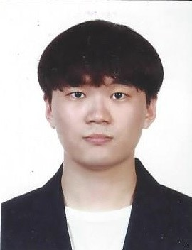

Nam Hyunjee (남현지)M.S. StudentMarch 1, 2023 ~ Present Interests: Deep learning, Machine learning, AI Security |
||
Seoyoung Park (박서영)M.S. StudentSeptember 1, 2023 ~ Present Interests: Deep learning, Machine learning, Signal Processing, Voice Spoofing Detection |
||
Hyeonju Kim (김현주)M.S. StudentMarch 1, 2024 ~ Present Interests: Deep learning, Machine learning |
||
Sooyoung Park (박수영)M.S. StudentMarch 1, 2024 ~ Present Interests: Deep learning, Machine learning |
||
|  | Taekyung Jung (정태경)M.S. StudentMarch 1, 2024 ~ Present Interests: Deep learning, Machine learning |
|
|
| |